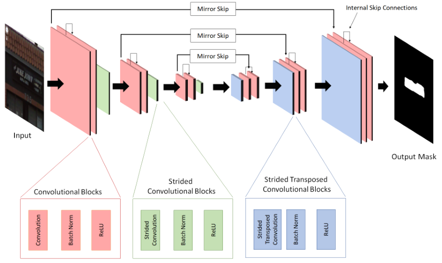
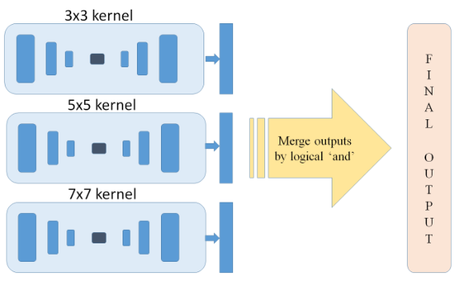
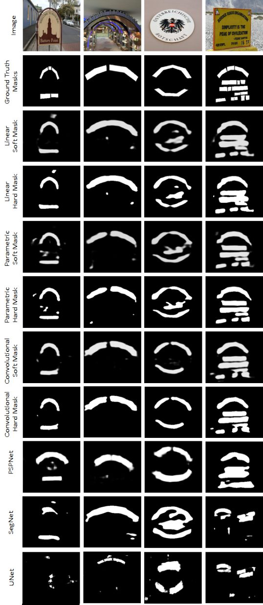

Finding text in street photos by letting the network weigh its own shortcuts
Before a computer can read a shop sign in a photo, it has to find the sign. This paper is about that first step, called text localization. We built a neural network that labels every pixel of an image as text or not text, and we changed the way its layers pass information to each other. On four public datasets it beat three well-known segmentation networks.
The problem
Text in the wild is awkward. Lighting is uncontrolled, backgrounds are cluttered, and many ordinary objects happen to look like letters. Text also comes in every size, from a word that fills the frame to a few pixels in a corner, and it can be tilted or curved.
Popular object detectors draw boxes. They start from a set of preset box shapes, called anchor boxes, which are chosen by clustering the boxes in the training data. Text boxes vary so much in size and aspect ratio that a fixed set of shapes fits them badly. Since text finding only needs a yes or no answer, we dropped boxes altogether. The network outputs a mask, a black and white picture the size of the input, where white pixels are text. This is binary segmentation, and it can mark curved text as well.
The idea
We used an encoder-decoder network. The encoder squeezes the image through a series of layers, each giving a coarser summary. The decoder then expands that summary back into a full-size mask. Squeezing throws away fine detail, so a network called U-Net adds skip connections: shortcuts that copy features from an encoder layer straight across to the matching decoder layer.
A plain shortcut has a weakness. Every bridge feeds the decoder with the same weight and nobody controls the total flow, so one layer can drown out the others. We replaced the bridges with three kinds of mirror connection:
- Linear. Add the encoder features to the decoder as they are, as U-Net does.
- Parametric. Multiply the encoder features by one trainable number first, so the network learns how loudly each bridge should speak.
- Convolutional. Pass the features through an extra small encoder and decoder pair before adding them. This gives finer control but needs more memory.
Inside each layer we also added internal skips, in the style of residual networks, so that the learning signal reaches the early layers more easily.

Three window sizes and a vote
A convolution looks at the image through a small sliding window, called a kernel. A small window sees fine strokes and a larger one sees more context. For each type of mirror connection we trained three networks with 3×3, 5×5 and 7×7 windows, so nine in total. To get the final mask we kept a pixel as text only where the three networks agreed, which removes many false alarms.

What we found
We tested on ICDAR 2003, SVT, ICDAR 2015 and Total-Text. The first three label text with rectangles. Total-Text contains curved text (Table 2). We held back roughly 20% of the training data for tuning. We report the F-score, one number between 0 and 1 that mixes precision (how much of the marked text is real) with recall (how much of the real text was found).
Single networks were uneven. On SVT, for example, individual F-scores ranged from 0.57 to 0.74 (Table 4), and no kernel size or connection type won everywhere. The pattern only showed once we merged the three window sizes. The parametric version then gave the best F-score on SVT (0.84), ICDAR 2003 (0.87) and ICDAR 2015 (0.79) (Table 3), and we conclude that it works best overall. The plain linear connection did not do as well.
The convolutional connection came out slightly ahead only on Total-Text, which suggests that curved masks profit from its finer control. In the sample masks, the parametric networks drew cleaner shapes and showed less uncertainty in their soft masks, which are the raw probabilities before we threshold them at 0.5.

What it does not do
The convolutional connection needs more memory and is prone to over-fitting the training data. The datasets are small, with 100 to 1,255 training images (Table 2). The network also only says where text is. It does not read it. The paper points to splitting text into single characters as a natural next step.
Finding the text is the first step before reading it. The paper's introduction names reading shop names and street signs for navigation systems as one use.
Sources
The figures and tables listed here are taken from the paper cited at the top of this page; the numbers quoted in the text come from the paper too.
- Figures: Fig. 1, Fig. 5, Fig. 9
- Tables: Table 2: size and type of the four datasets; Table 3: F-scores of the merged models and of SegNet, U-Net and PSPNet; Table 4: F-scores of each single network on SVT
Acknowledgements
This work is sponsored by SERB (Government of India, order no. SB/S3/EECE/054/2016, dated 25/11/2016), and was carried out at the Centre for Microprocessor Application for Training Education and Research, CSE Department, Jadavpur University.
How to cite the paper
K Dutta, M Bal, A Basak, Swarnendu Ghosh, N Das, M Kundu, M Nasipuri (2020). Multi scale mirror connection based encoder decoder network for text localization. Pattern Recognition Letters, Vol. 135, pp. 64–71 · Elsevier.